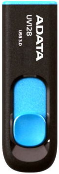

The new Adata Dashdrive UV128 has a performance profile that closely
matches its older, and recently rebranded, Dashdrive Elite S102 Pro
sibling. Comparing the two shows that the drives are nearly identical
except for form factor. Personally I prefer a retractable form factor as
USB caps are easily lost. Overall in terms of performance the Dashdrive
UV128 is slightly above average and in terms of value for money it is also
reasonable.